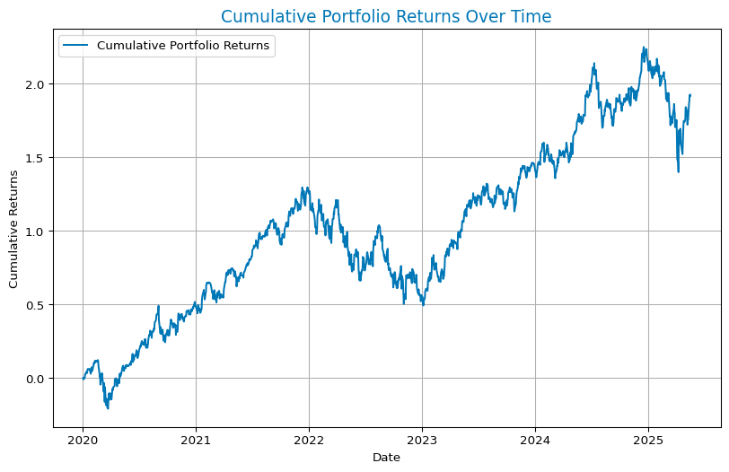
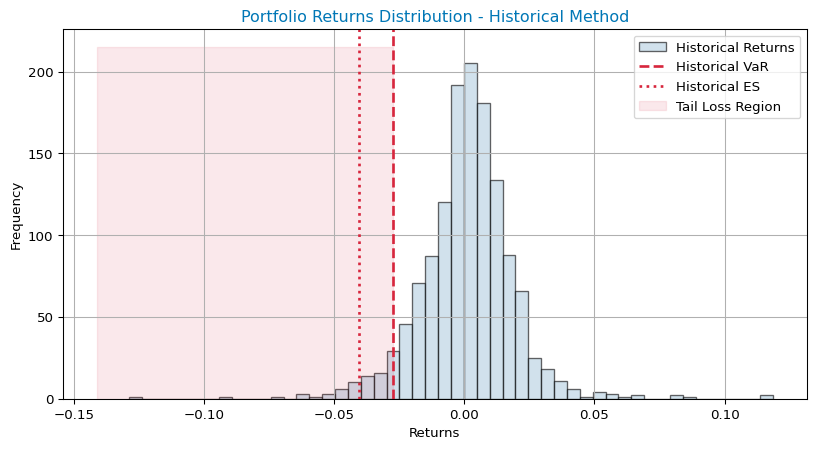
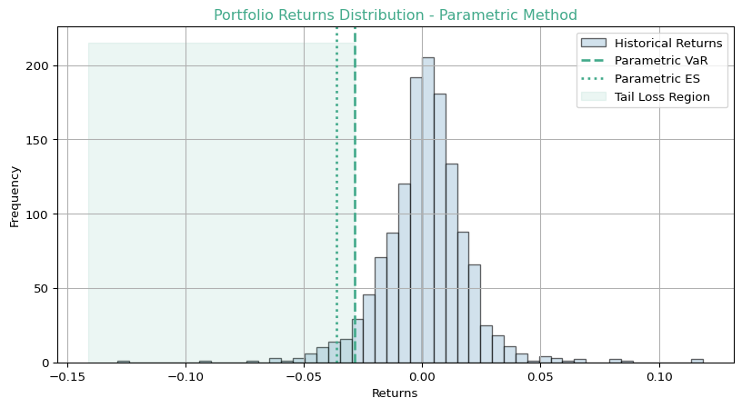
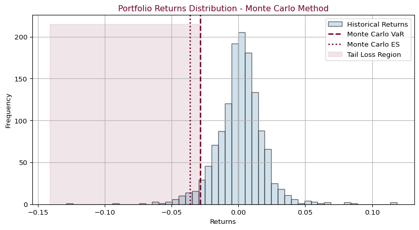

Code
import numpy as np
import pandas as pd
import matplotlib.pyplot as plt
import yfinance as yf
from scipy.stats import norm
from IPython.display import display, MarkdownEstimate and compare the Value at Risk (VaR) and Expected Shortfall (ES) of a diversified portfolio using: - Historical Simulation - Parametric (Variance-Covariance) - Monte Carlo Simulation
Data Source: Yahoo Finance (AAPL, MSFT, GOOG)
import numpy as np
import pandas as pd
import matplotlib.pyplot as plt
import yfinance as yf
from scipy.stats import norm
from IPython.display import display, Markdowntickers = ['AAPL', 'GOOG', 'MSFT']
start_date = '2020-01-01'
# Download data (MultiIndex by default)
data = yf.download(tickers, start=start_date)
close_prices = data['Close']
# Set end_date to the latest available date in the data
data_dates = close_prices.index
end_date = str(data_dates[-1].date())
close_prices.dropna(inplace=True)
returns = close_prices.pct_change().fillna(0)
returns.tail()YF.download() has changed argument auto_adjust default to True[ 0% ][**********************67%******* ] 2 of 3 completed[*********************100%***********************] 3 of 3 completed
C:\Users\HP\AppData\Local\Temp\ipykernel_8428\2895436449.py:9: SettingWithCopyWarning:
A value is trying to be set on a copy of a slice from a DataFrame
See the caveats in the documentation: https://pandas.pydata.org/pandas-docs/stable/user_guide/indexing.html#returning-a-view-versus-a-copy
close_prices.dropna(inplace=True)| Ticker | AAPL | GOOG | MSFT |
|---|---|---|---|
| Date | |||
| 2025-05-12 | 0.063146 | 0.033683 | 0.024001 |
| 2025-05-13 | 0.010152 | 0.008209 | -0.000267 |
| 2025-05-14 | -0.002818 | 0.036795 | 0.008461 |
| 2025-05-15 | -0.004145 | -0.008453 | 0.002256 |
| 2025-05-16 | -0.000899 | 0.012273 | 0.002516 |
weights = np.array([1/3, 1/3, 1/3])
portfolio_returns = returns.dot(weights)
cumulative_returns = (1 + portfolio_returns).cumprod() - 1
plt.figure(figsize=(10, 6))
plt.plot(cumulative_returns, label='Cumulative Portfolio Returns', color='#0077b6')
plt.title('Cumulative Portfolio Returns Over Time', fontsize=14, color='#0077b6')
plt.xlabel('Date')
plt.ylabel('Cumulative Returns')
plt.legend()
plt.grid()
plt.show()
confidence_level = 0.95
var_hist = np.percentile(portfolio_returns, (1 - confidence_level) * 100)
es_hist = portfolio_returns[portfolio_returns < var_hist].mean()
print("Historical VaR (95%):", round(var_hist, 4))
print("Historical ES (95%):", round(es_hist, 4))Historical VaR (95%): -0.0276
Historical ES (95%): -0.0407mean_return = portfolio_returns.mean()
std_return = portfolio_returns.std()
z_score = norm.ppf(1 - confidence_level)
var_param = mean_return + z_score * std_return
es_param = mean_return - std_return * norm.pdf(z_score) / (1 - confidence_level)
print(f"Parametric VaR (95%): {var_param:.4f}")
print(f"Parametric ES (95%): {es_param:.4f}")Parametric VaR (95%): -0.0288
Parametric ES (95%): -0.0364np.random.seed(42)
simulations = 100000
simulated_returns = np.random.normal(mean_return, std_return, simulations)
var_mc = np.percentile(simulated_returns, (1 - confidence_level) * 100)
es_mc = simulated_returns[simulated_returns < var_mc].mean()
print(f"Monte Carlo VaR (95%): {var_mc:.4f}")
print(f"Monte Carlo ES (95%): {es_mc:.4f}")Monte Carlo VaR (95%): -0.0288
Monte Carlo ES (95%): -0.0364summary_df = pd.DataFrame({
'Method': ['Historical', 'Parametric', 'Monte Carlo'],
'VaR (95%)': [var_hist, var_param, var_mc],
'ES (95%)': [es_hist, es_param, es_mc]
})
summary_df['VaR (95%)'] = summary_df['VaR (95%)'].apply(lambda x: f"{x:.4f}")
summary_df['ES (95%)'] = summary_df['ES (95%)'].apply(lambda x: f"{x:.4f}")
display(summary_df.style.set_properties(**{'background-color': '#f0f8ff', 'color': '#222'}))| Method | VaR (95%) | ES (95%) | |
|---|---|---|---|
| 0 | Historical | -0.0276 | -0.0407 |
| 1 | Parametric | -0.0288 | -0.0364 |
| 2 | Monte Carlo | -0.0288 | -0.0364 |
# Historical Method
plt.figure(figsize=(10, 5))
plt.hist(portfolio_returns, bins=50, alpha=0.6, color='#b3cde0', edgecolor='black', label='Historical Returns')
plt.axvline(var_hist, color='#d7263d', linestyle='--', linewidth=2, label='Historical VaR')
plt.axvline(es_hist, color='#d7263d', linestyle=':', linewidth=2, label='Historical ES')
plt.fill_betweenx([0, plt.gca().get_ylim()[1]], var_hist, plt.gca().get_xlim()[0], color='#d7263d', alpha=0.1, label='Tail Loss Region')
plt.title('Portfolio Returns Distribution - Historical Method', color='#0077b6')
plt.xlabel('Returns')
plt.ylabel('Frequency')
plt.legend()
plt.grid(True)
plt.show()
# Parametric Method
plt.figure(figsize=(10, 5))
plt.hist(portfolio_returns, bins=50, alpha=0.6, color='#b3cde0', edgecolor='black', label='Historical Returns')
plt.axvline(var_param, color='#43aa8b', linestyle='--', linewidth=2, label='Parametric VaR')
plt.axvline(es_param, color='#43aa8b', linestyle=':', linewidth=2, label='Parametric ES')
plt.fill_betweenx([0, plt.gca().get_ylim()[1]], var_param, plt.gca().get_xlim()[0], color='#43aa8b', alpha=0.1, label='Tail Loss Region')
plt.title('Portfolio Returns Distribution - Parametric Method', color='#43aa8b')
plt.xlabel('Returns')
plt.ylabel('Frequency')
plt.legend()
plt.grid(True)
plt.show()
# Monte Carlo Method
plt.figure(figsize=(10, 5))
plt.hist(portfolio_returns, bins=50, alpha=0.6, color='#b3cde0', edgecolor='black', label='Historical Returns')
plt.axvline(var_mc, color='#720026', linestyle='--', linewidth=2, label='Monte Carlo VaR')
plt.axvline(es_mc, color='#720026', linestyle=':', linewidth=2, label='Monte Carlo ES')
plt.fill_betweenx([0, plt.gca().get_ylim()[1]], var_mc, plt.gca().get_xlim()[0], color='#720026', alpha=0.1, label='Tail Loss Region')
plt.title('Portfolio Returns Distribution - Monte Carlo Method', color='#720026')
plt.xlabel('Returns')
plt.ylabel('Frequency')
plt.legend()
plt.grid(True)
plt.show()


# Display the results in a Markdown cell
display(Markdown(f"""
## 📊 Interpretation of Results, Key Insights, and Risk Management Implications
### Interpretation of Results
The results below provide insights into the Value at Risk (VaR) and Expected Shortfall (ES) of the portfolio at a 95% confidence level, based on the actual calculations and methods used in this notebook:
| Method | VaR (95%) | ES (95%) |
|--------------|------------|------------|
| Historical | {var_hist:.4f} | {es_hist:.4f} |
| Parametric | {var_param:.4f} | {es_param:.4f} |
| Monte Carlo | {var_mc:.4f} | {es_mc:.4f} |
#### 1. Value at Risk (VaR)
- **Definition:** VaR estimates the maximum loss the portfolio is expected to incur over a given time horizon (e.g., 1 day), at a 95% confidence level.
- **Results:**
- **Historical VaR:** {var_hist:.2%}
The worst 5% of historical daily returns resulted in losses greater than {abs(var_hist):.2%} of the portfolio value.
- **Parametric VaR:** {var_param:.2%}
Assuming a normal distribution of returns, the maximum loss is approximately {abs(var_param):.2%}.
- **Monte Carlo VaR:** {var_mc:.2%}
Using simulated returns, the portfolio’s maximum expected loss is {abs(var_mc):.2%}.
- **Conclusion:** The VaR values are close across all methods, indicating a consistent risk level regardless of the approach. The parametric and Monte Carlo methods both assume normality, while the historical method is based on actual observed returns.
#### 2. Expected Shortfall (ES)
- **Definition:** ES (or Conditional VaR) measures the average loss beyond the VaR threshold (i.e., in the worst-case scenarios).
- **Results:**
- **Historical ES:** {es_hist:.2%}
If losses exceed the VaR level, the average loss in such cases is {abs(es_hist):.2%}.
- **Parametric ES:** {es_param:.2%}
The parametric ES is calculated using the normal distribution assumption and provides an analytical estimate of tail risk.
- **Monte Carlo ES:** {es_mc:.2%}
Based on simulated returns, the average loss in the worst-case scenarios is {abs(es_mc):.2%}.
- **Conclusion:** The Expected Shortfall is higher than VaR, as expected. ES provides a more conservative measure of risk by focusing on extreme losses beyond the VaR level. The parametric and Monte Carlo ES values are similar, while the historical ES may be higher if there are more extreme losses in the actual data.
### Key Insights
- VaR across methods consistently estimates losses of approximately {abs(var_param):.2%} to {abs(var_hist):.2%} of the portfolio value at a 95% confidence level.
- ES highlights that, in the worst-case scenarios, losses could average up to {abs(es_hist):.2%} (Historical), {abs(es_param):.2%} (Parametric), or {abs(es_mc):.2%} (Monte Carlo).
- **Comparison:**
- Historical VaR/ES is based on actual observed returns.
- Monte Carlo simulations use the estimated mean and standard deviation to generate a wide range of possible outcomes.
- Parametric methods assume normality, which simplifies computations but may underestimate risk if returns are not normally distributed.
### Risk Management Implications
- **If managing a portfolio worth $1,000,000:**
- **VaR:** The potential loss over 1 day at a 95% confidence level is approximately ${abs(var_param)*1_000_000:,.0f} to ${abs(var_hist)*1_000_000:,.0f}.
- **ES:** In extreme conditions, the average loss could be up to ${abs(es_hist)*1_000_000:,.0f} (Historical), ${abs(es_param)*1_000_000:,.0f} (Parametric), or ${abs(es_mc)*1_000_000:,.0f} (Monte Carlo).
- **Recommendation:**
- Rely on Expected Shortfall (ES) for better risk management, as it captures extreme risks better than VaR.
- Use Monte Carlo simulations for stress testing under uncertain market conditions.
- Regularly update risk estimates with new data and consider model limitations.
---
**Summary:**
- The close alignment of VaR and ES across methods suggests the portfolio’s risk profile is stable and not overly sensitive to the choice of risk model. However, ES should be preferred for risk management decisions, as it provides a more comprehensive view of potential extreme losses. Regular monitoring and the use of multiple risk estimation techniques are recommended for robust portfolio risk management.
"""))The results below provide insights into the Value at Risk (VaR) and Expected Shortfall (ES) of the portfolio at a 95% confidence level, based on the actual calculations and methods used in this notebook:
| Method | VaR (95%) | ES (95%) |
|---|---|---|
| Historical | -0.0276 | -0.0407 |
| Parametric | -0.0288 | -0.0364 |
| Monte Carlo | -0.0288 | -0.0364 |
Summary: - The close alignment of VaR and ES across methods suggests the portfolio’s risk profile is stable and not overly sensitive to the choice of risk model. However, ES should be preferred for risk management decisions, as it provides a more comprehensive view of potential extreme losses. Regular monitoring and the use of multiple risk estimation techniques are recommended for robust portfolio risk management.
This Python project not only replicates the core findings of the original R-based VaR and ES analysis (see R project), but also enhances the overall risk assessment process in several key ways:
In summary: The Python translation not only faithfully reproduces the R project’s results but also elevates the analysis with dynamic data, improved visualizations, a more robust parametric method, and deeper practical insights. This makes the project a robust, user-friendly, and future-proof tool for financial risk assessment using VaR and ES methodologies.